- Overview
- Creating DynaForms
- Managing DynaForms
- The DynaForm Editor
- The DynaForm Editor Tabs
- Preview tab
- XML tab
- HTML tab
- Fields Handler tab
- JavaScripts tab
- Properties tab
- Conditions Editor tab
- Preventing Session Timeout
- Printing Dynaforms
- Dyanforms accessibility
Overview
DynaForms, or "Dynamic Forms", are the custom forms which can be designed in ProcessMaker to interface with the user while running a case. DynaForms allow users to view and enter data into cases in a graphical interface which should be intuitive for even non-technical users.
The DynaForm Editor is designed to be user-friendly for process designers who don't have any programming experience, yet also provide the full XML code and the HTML code for process designers who want to customize their forms to their hearts content. DynaForms allow process designers to use SQL queries to pull data from external databases or the ProcessMaker databases. With case variables, data can also be pulled from ProcessMaker triggers and used in the fields in DynaForms. Finally, audacious process designers can add their own custom JavaScript code to dynamically control their DynaForms, error check the data and provide feedback to the user.
From version 1.X, DynaForms have been improved, users can notice this by creating and customizing DynaForms, more controls were added, more intuitive options to create DynaForms, etc, a proof of this is the enhancements added from version 2.5, that ranged from the creation of a DynaForm to the automatically correction of it.
Throughout the documentation, improvements and features added form version 2.5.x will be explained.
Creating DynaForms
To create a new DynaForm, first open the process where the DynaForm will be used. (Go to the DESIGNER menu, find a process in the list and click it's Edit link.) Then select the DYNAFORMS tab to display the list of existing DynaForms. Click the New link at the top left of the list. First, select the type of DynaForm:
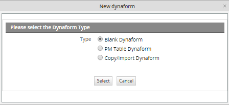
To create a DynaForm from scratch, select the first option Blank Dynaform. To create a DynaForm whose fields are based upon the fields in an existing PM Table, select the second optionPM Table DynaForm. In this case, when the user enters data into the fields in the DynaForm, a new record with that data will automatically be inserted in that PM Table. See PM Table DynaForm below.
Blank DynaForm
Define the properties of the new Dynaform:
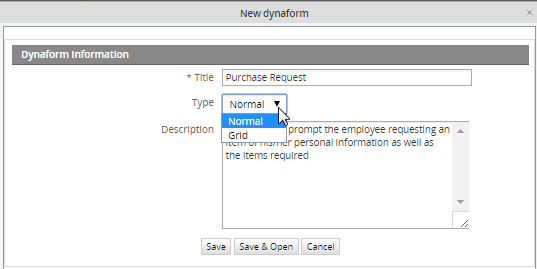
Enter a Title for the DynaForm. Production users who run cases can see the DynaForm title when they go to the INFORMATION tab and click the DynaForms button, so create a title which will make sense to users running cases.Select the Type of DynaForm. Normal or master forms are designed to display only a single record and their fields are laid out vertically by default. They are stand-alone forms and can not be embedded into other forms.
In contrast, grid forms are designed to contain multiple records. Their fields are laid out horizontally in a single row, so they can be repeated to form a table consisting of columns and rows. Grid forms are also capable of using special aggregate functions, such as sum, to perform operations on all the fields in a column. Grid forms can only contain fields which are types of textboxes and dropdown boxes, because they occupy little space and are easily displayed in the format of rows. From version 1.2-2740 on, grids can also contain textareas and hidden fields.
Grid forms are created separately from master forms, but they can not be used alone and must be embedded in a master form when used in a process. Embedding the grid form in a master form provides it with additional controls to add and delete records.
Enter a Description for the DynaForm. The description will not be seen by ordinary production users who run cases, so geer the description for process designers who may need to edit the DynaForm later. Since the description doesn't automatically line wrap, use hard returns.
Click Save to create the new DynaForms and return to the list of available DynaForms for the process. Click Save and Edit to create the new DynaForm and immediate begin editing it in theDynaForm Editor.
PM Table DynaForm
This option creates fields in a DynaForm based on the fields of an existing PM table. Moreover, when the DynaForm is submitted when running a case, the information is stored in that PM table. Select the second option "PM Table DynaForm" and the following modal window will display:
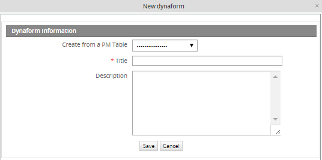
- Save: Saves the configuration made over the fields.
- Cancel: Discards changes made in the the creation of the DynaForm and closes the current window.
- Create from PM table: Required Field. Select the PM Table from where the DynaForm will be created.
- Title: Required Field. Enter the name the DynaForm. The more descriptive the title is, the easier to understand what it is about.
- Description: Enter a brief description about the DynaForm.
- Define Process variables to use as Primary Keys. After selecting the PM table from which the DynaForm will be based, a new section will display down in the window. This section contains the fields or fields that will be defined as primary key (s) in the selected PM table.
- ID: Required Field. All PM Tables have to be indexed on one or more primary key fields. Select a case variable or system variable whose value will auto-populate the primary key field(s). Note that the value of the primary key field (or the combined value of the primary key fields) must be unique, so only select variables which will have unique values. If needing to use a primary key field which auto-increments, see the example below.
- @@ Use the @@ button to select either case or system variables.
Example
The following example is intended to illustrate how to create a Dynaform from a PM table:
Step 1: Create a Customer PM Table with the following fields:
Note: Once the PM table is created, the PMT prefix will be added, so the name of the final table will be PMT_CUSTOMER
Step 2: Create the PM Table Dynaform selecting the name of the PM table. Use @@APPLICATION as a primary key only if the value is not an auto-increment value. If it is an auto-increment value use the workaround below:
When at the dialog box to select variable for the primary key, select any available variable. Then, edit the XML code of the DynaForm and remove the variable in keys="@@VAR" and make the primary key field not a required field, by changing required="1" to required="0"
For example, change from:
<CUSTOMERNAME type="pmconnection" pmtable="9847619654f1ee6ed9b5c74029502759" keys="@@APPLICATION"></CUSTOMERNAME>
<ID type="text" pmconnection="CUSTOMERNAME" pmfield="ID" required="1">
<en>ID</en>
</ID>
To:
<CUSTOMERNAME type="pmconnection" pmtable="9847619654f1ee6ed9b5c74029502759" keys=""></CUSTOMERNAME>
<ID type="text" pmconnection="CUSTOMERNAME" pmfield="ID" required="0">
<en>ID</en>
</ID>
When the record is inserted in the PM Table, the primary key field will be auto-incremented.
When done, click on Save to create a new DynaForm with fields matching the fields in the PM Table.
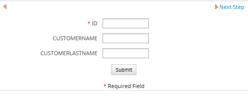
Finally, when running cases all data introduced in the DynaForm will be stored inside the PMT_CUSTOMER table.
That way, when the record is inserted in the PM Table, the primary key field will be auto-incremented.
When done, click on Save to create a new DynaForm with fields matching the fields in the PM Table.
The PM Table DynaForm can then be edited like a normal DynaForm. It is a good idea to edit the properties of the DynaForm fields, so they only accept input which is valid data in the PM Table field. If adding a new field to the DynaForm, note that its value will not be automatically inserted into the PM Table. To insert its value, manually add a new field to the PM Table and then edit the XML code of the DynaForm to link the new DynaForm field to the new PM Table field.
Copy/Import DynaForm
On previous version of ProcessMaker, if a DynaForm used on a Process was required to be used in a different process, it had to copied manually from a process to another. From this version, the possibility to copy/import a Dynaform was added, giving users the possibility to reuse an existing DynaForm created ONLY in the current workspace. Moreover, if the Dynaform has a grid embedded in it, this will be also copied with its structure and fields.
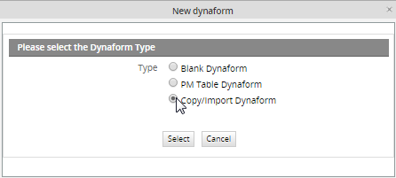
By selecting the option Copy/import a Dynaform, a window will open to select DynaForm to be copied:

Where:
- Process: all available processes of the current workspace will be listed. Select a process from which the dynaform will be copied.
- Showing forms of type: Select the DynaForm type to be copied, it will be Normal or Grid.

- Dynaform to copy/import: Required Field, all available Dynaforms of the selected process, and depending on the type chosen on a previous field, will be listed:
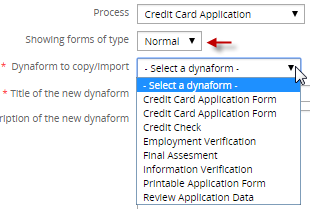
- Title of the new dynaform: Required Field, Title of the Dynaform, it will be filled automatically according to what was chosen on a previous field. This title can be modified.
- Description of the new dynaform: Description of the dynaform which will be filled automatically according to what was chosen on the Dynaform selected previously. This description can also be modified.

If the dynaform just need to be copy, click on Copy/Import, but if it needs to be modified after copying it click on Copy/Import and Open. If the first button is clicked, it will redirect to the dynaform list, on the contrary, if the second button is clicked dynaform will be opened to have it edited.
Managing DynaForms
All the DynaForms available for the current process can be found by selecting the DYNAFORMS tab (under the PROCESSES menu).
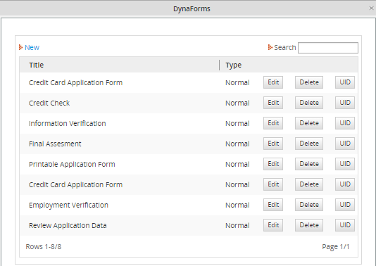
- Title: The title of DynaForms.
- Type: The type of DynaForm, which can be either "Normal" or "Grid".
- Edit: Click to edit the DynaForm.
- Delete: Click to delete the DynaForm.
- UID: Click to view the UID of the DynaForm.
The DynaForm Editor
The DynaForm Editor provides a graphical designer for DynaForms, with a toolbar to add new elements to DynaForms and tabs to switch easily between the graphical preview of the form, the code, and the definition of the fields in the form.
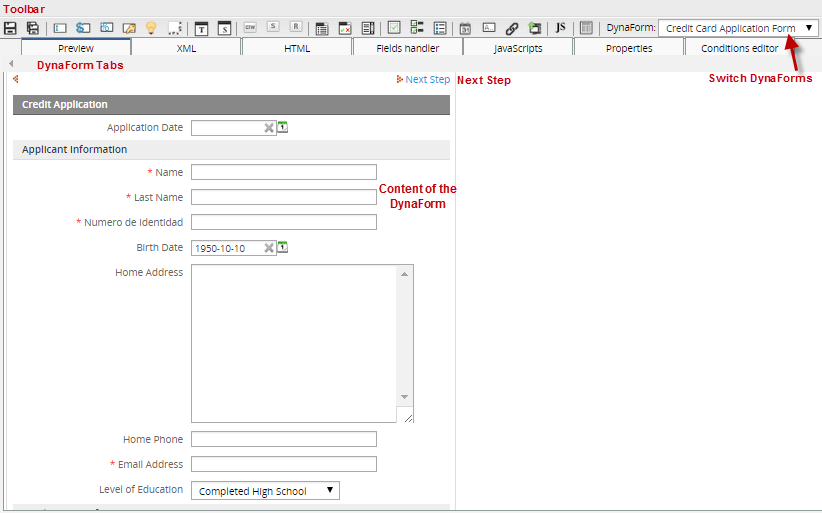
Unlike the drag-and-drop interface of the Process Map, the DynaForm Editor is a click-and-define interface. Click on the toolbar to add a new object to the DynaForm, then define the characteristics of that object. The DynaForm Editor allows for the properties of objects to be specified to a great degree, and access to the XML code allows for a great deal of flexibility in object definition. The Preview tab allows process designers to check how fields in the form will appear and be populated with values before running a case.
Objects are added to DynaForms in a specific order to DynaForms and can not be moved around freely with the mouse. Instead, objects can only be moved around by changing their order inside the Field List tab or by modifying the HTML code for the form. The WYSIWYG HTML editor allows designers to customize the appearance of DynaForms. For process designers who want maximum control over their forms, full access to the HTML code is provided.
The DynaForm Editor Toolbar
The DynaForm Editor provides a toolbar to easily add fields and other objects to the DynaForm. The toolbar buttons function while in all the DynaForm Editor tabs, so objects can be added to DynaForms at any time, whether using the Preview mode, editing code, viewing the field list, or setting the form properties. Unlike the Process Map toolbar which uses drag-and-drop icons, the icons in the DynaForm Editor toolbar are activated by a single mouse click over the icons.
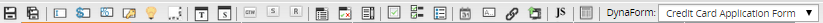
- Save. Click to save the DynaForm. Before version 1.2-2895, ProcessMaker did not allow for different versions of a DynaForm to be saved. If making experimental changes to a DynaForm which you might want to later undo when using an older version of ProcessMaker, it is recommended to first export your process, so you can later import the old process definition if you decide to not keep your changes.
- Save as. Click to save a copy of the DynaForm. A new feature in version 1.2-2895 and later which allows the content of the present DynaForm to be saved under a different DynaForm name. "Save As" is useful when making another copy of a DynaForm to make experimental changes or when creating multiple copies of the same DynaForm with slight changes to the fields.
- Text. Add a textbox to the DynaForm, which is designed to input one line of text.
- Currency. Add a currency textbox to the DynaForm, which restricts the input to numbers.
- Percentage. Add a percentage textbox to the DynaForm, which restricts the input to numbers to form percentages.
- Password. Add a password textbox to the DynaForm. This textbox displays the input as ******, so observers can't easily glimpse passwords.
- Suggest. Add a suggest box to the Dynaform. A new feature in version RC2_1.2-3306 and later which shows the users a list of suggestion as he types in the box, and it allows one value to be selected.
- Textarea. Add a textarea to the DynaForm, which is designed to input more than one line of text into a form. The number of lines and width of the textarea can be specified, and scrollbars will automatically appear to allow for greater space if more text is entered.
- Title. Add a title to the DynaForm, which are designed to label the major sections of the form.
- Subtitle. Add a subtitle to the DynaForm, which are designed to label the minor sections of the form and appear with a smaller font and more indentation than a title.
- Button. Add a button to the DynaForm. The functionality of a button has to be added with custom JavaScript code.
- Submit. Add a submit button to the DynaForm. Submit buttons save the data entered into a Dynaform to the database and to case variables, so the data can be accessed later in the case.
- Reset. Add a reset button, which clears the entered data and resets the DynaForm to its original state.
- Dropdown. Add a dropdown box to the DynaForm. Dropdown boxes allow the user to select from a list of predetermined options which drop down. They occupy less space than a listbox, but only allow a single value to be selected.
- Yesno. Add a Yes/No dropdown box, which is designed to present a binary "Yes"/"No" option to the user. Unlike checkboxes, Yes/No dropdowns can be used in grids.
- Listbox. Add a listbox to the DynaForm. Listboxes allow the user to select one or more predetermined options. They are more convenient to use than a dropdown box, since they do not require clicking to see the available options and they allow more than one option to be selected, but they occupy more space.
- Checkbox. Add a checkbox to the DynaForm. Checkboxes offer a binary on/off choice and are square in appearance with a check mark when activated (on). Checkboxes are convenient for allowing a user to activate an option with a single click of the mouse and are recommended over Yes/No dropdown boxes in most cases.
- Checkgroup. Add a checkgroup, which is a group of checkboxes where the user can activate all, some or none of the checkboxes. The checkbox group has a title (label) and all the checkboxes in the group should be related in some way to that title.
- Radiogroup. Add a radiogroup to the DynaForm. Like checkboxes, radio buttons offer only a binary on/off option, but they are round and a black dot appears in the middle when activated (on). Unlike checkgroups, radiogroups only allow the user to select one option, and will deselect all other options. Like listboxes, radio groups occupy more space but are more convenient for the user since selection only requires a single click.
- Date. Add a date selector to the DynaForm, which does not allow the user to directly enter the date like a normal textbox. Instead clicking on the box opens a calendar where the user can select the date. This helps standardize date formats and eliminates many careless errors. Date selectors also offer another button to clear the date.
- Hidden. Add a hidden field to the DynaForm. Hidden fields allow for unseen variables to be added to the DynaForm. They are often used when needed to pass extra data to JavaScripts or when needing a space to store data which shouldn't be seen by the user.
- Link. Add a link to the DynaForm. Links can either be hyperlinks to external web pages, or an internal link to another DynaForm.
- File. Add a file to the DynaForm, which provides a dialog box to upload a file. The files can either be an Input Document (since version 1.2-2467) or an undetermined file.
- Javascript. Add JavaScript code to the DynaForm, which allows the process designer to customize the behavior of the form, add data checking and perform custom calculations.
- Grid. Embed a grid form inside the master DynaForm. Grid forms are special forms which present data in a table format consisting of columns and rows. They offer controls to add and delete rows and aggregate functions such as summing a column.
- Dynaform: A dropdown was added in the toolbar to have the possibility to edit multiple dynaforms without closing the current one, this will optimize the editing time spent specially when it is required to have a numerous dynaforms edited.

- In the dropdown will be listed all available dynaforms for the current process. If one of the dynaforms is selected to be edited, it is not necessary to close it to open another one, just edit and save it, and select a different one from the list and so forth.
- From version 2.8 this list is ordered alphabetically in ascending order.
- 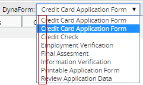
The DynaForm Editor Tabs
The DynaForm Editor offers a tab bar which allows the process designer to switch rapidly between field definitions and code editing to a graphical preview mode to check how the DynaForms will appear to the user.

Preview tab
Displays a graphical preview of the DynaForm. Here the process designer can try out the form to see how the objects in form will appear and how they will be filled with values. Preview mode may have slight differences from when it is run in a case, especially if it uses fields which depend upon values entered in previous DynaForms or case variables defined in previous triggers.
Nonetheless, the preview mode should allow process designer to check layout and design of the DynaForm, verify the default values and the options in listboxes, dropdown boxes, checkbox groups, etc, and verify the SQL statements used to populate fields (as long as the requisite tables already exist). Moreover, Preview mode will run JavaScripts, so it should be possible to debug code which doesn't depend upon case data. Running test cases to polish and debug DynaForms can be a laborious process, so process designers should make use of the Preview mode as much as possible to shorten development time.
XML tab
ProcessMaker uses XML (Extensible Markup Language) to define the fields and other objects used in DynaForms. The flexibility of XML and its ability to add custom options to the language makes it a good match for ProcessMaker.
Process designers who want complete control over the definition of objects in their DynaForms can switch to the XML tab and directly access the code. Moreover, there is some functionality, such as the use of aggregate grid functions and the use of PM tables and custom arrays to populate lists which is only possible by editing the XML code. New functions in ProcessMaker are generally added first to the XML code before they are added to the graphical field designer in the Fields Handler tab. See the documentation for each field for more information about how it is defined in the XML.
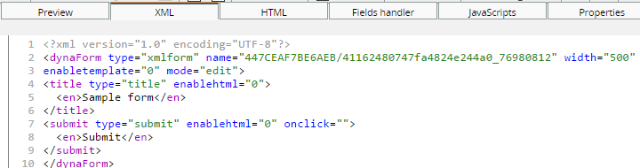
After modifying the XML code, the Preview mode and Fields Handler will automatically update according to the changes in the XML. If altering the definition of objects in XML, it is a good idea to switch to the Preview mode or the Fields Handler tab to check the validity of your changes. Mistakes in the XML can usually be caught by checking how ProcessMaker displays the altered DynaForm in Preview mode.
XML syntaxis validation
Note: This validation is applied only for XML code.
For example:
Modifying the following XML code:
<en>Name</en>
</APPLICANT_NAME>
to:
<en>Name
</APPLICANT_NAME>
The end tag was deleted to see the error:

That message will be displayed trying to open the Preview tab, according to the message, the error is related to tag. By pressing Ok, error will be fixed by completing the missing tag.
XML form storage
The XML code for DynaForms is stored in the file location:
<INSTALL-DIRECTORY>/shared/sites/<WORKSPACE>/xmlForms/<PROCESS-UID>/<DYNAFORM-UID>.xml
For example:
/opt/processmaker/shared/sites/workflow/xmlForms/728cae447fbdF7be6aeb1276dce1f/41162480747fa4824e244a076980812.xml
Windows after version 1.6-4260 or manual install:
C:\Program Files\ProcessMaker\processmaker\shared\sites\workflow\xmlForms\728cae447fbdF7be6aeb1276dce1f\41162480747fa4824e244a076980812.xml
Windows before version 1.6-4260:
C:\Program Files\ProcessMaker\apps\processmaker\shared\workflow_data\sites\workflow\xmlForms\728cae447fbdF7be6aeb1276dce1f\41162480747fa4824e244a076980812.xml
If an XML form gets corrupted and can not be edited inside ProcessMaker, it is possible to directly edit the form with a plain text editor. While a DynaForm is being edited, it is saved as a temporary file named:
<INSTALL-DIRECTORY>/shared/sites/<WORKSPACE>/xmlForms/<PROCESS-UID>/<DYNAFORM-UID>_tmp#.xml
For example:
/opt/processmaker/shared/sites/workflow/xmlForms/728cae447fbdF7be6aeb1276dce1f/41162480747fa4824e244a076980812_tmp0.xml
If the system crashes while editing a DynaForm, it is possible to recover it by copying the XML code out of the temporary file.
HTML tab
Although ProcessMaker uses XML to define the objects in DynaForms, the layout and appearance of those objects is controlled by HTML (HyperText Markup Language). Editing the HTML provides a finer degree of control over the formatting of the DynaForm than using the graphical interface provided in Preview mode and the Fields Handler (formerly named Fields List). Note that only the HTML for master forms can be edited--it will not work for grid forms.
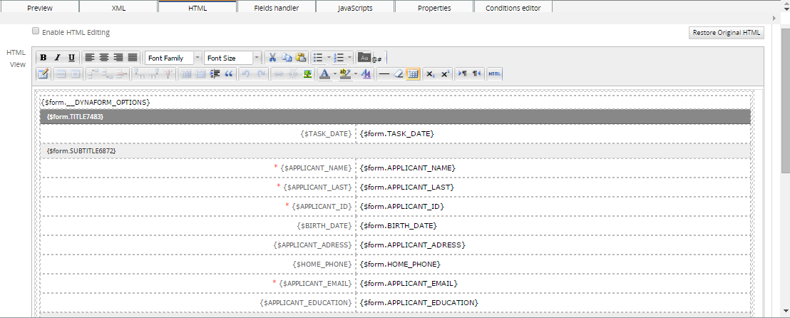
The HTML code should be edited after defining all the fields and setting the order of the fields in the DynaForm, this includes any Javascript code created. If Javascript code was added after enabling the HTML template, edit the HTML by including the Javascript code inside the following tags:
<script type="text/javascript"></script>
Add that, either at the beginning or at the of the HTML code.
After changing the HTML code, ProcessMaker may not be able to add, delete, or move fields correctly, since the HTML structure of the form has changed. If unexpected problems arise after editing a form's HTML code, revert the DynaForm's HTML by clicking the button Restore Original HTML.
Note: From version 2.5 this tab will be only available for Master Dynaforms.
The WYSWYG HTML Editor
For people who want to alter the appearance of their DynaForms, but don't want the hassle of delving into the HTML code, the DynaForm Editor provides an HTML View area. A WYSIWYG (What You See Is What You Get) HTML editor allows process designers to alter the formatting of DynaForms in a graphical design environment and add some of the more common HTML elements such as hyperlinks, images and horizontal rules. A user-friendly toolbar is provided to automatically insert HTML code into the DynaForm. In addition, users can click anywhere in theHTML View area to manually add text to their forms.
Fields, field labels and other objects defined in the XML are inserted directly into the HTML with PHP variables, which are enclosed in curly braces {}.
It is very important that no text or HTML tags be inserted inside the curly brackets or the DynaForm objects won't be inserted into the HTML correctly. When applying formatting to a PHP variable, make sure that the formatting encompasses the entire variable name, including its curly braces. Do NOT apply formatting like this:
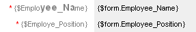
The HTML tags and are inserted into the middle of the name of the PHP variable {$Employee_Name}:
{$Emplo<big><span style="font-weight: bold;">yee_Na</span></big>me}
When switching to Preview mode, the following error will arise:
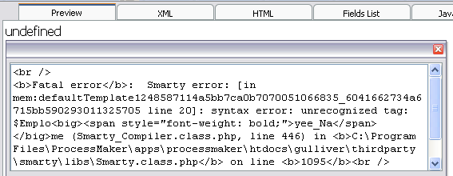
Instead, HTML formatting should be applied to the entire variable name including its curly braces like this:
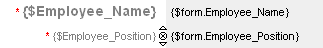
Here the HTML tags aren't inserted into the PHP variable name:
This will yield the following formatting in the DynaForm:
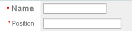
If you accidentally insert HTML tags or text into a PHP variable name and can't figure out how to undo the problem, click on the Restore Original HTML button, which will loose any changes made to the HTML and return it to its original state.
The HTML Toolbar
A great improvement added from this version is the new WYSIWYG HTML Editor, this editor will give the facility to create more comprehensive and advanced forms. the functioning is practically the same as the old editor, the difference is the use of controls and plugins added to this toolbar which help to create grids, tables, etc.
Click on icons in the HTML toolbar to insert new HTML elements such as hyperlinks, email links, images and horizontal rules. To alter the formatting of an HTML element, first select the element in the HTML View area and then click on the appropriate icon in the toolbar. It helps to know a bit of HTML when using the toolbar, since some of the icons force the user to manually enter bits of code, as in the case of the Email link, or the RGB (Red, Green, Blue) numbers when selecting colors.
Check the complete documentation about this editor, its functions, controls and examples of how to use it.
Altering the HTML Table Structure
DynaForm forms are constructed with HTML tables, so each field is contained in a table row and the label and field are separated into table cells. The WYSIWYG HTML Editor provides a user-friendly tool to alter this basic table structure.
Resizing the form
The form in the WYSIWYG HTML Editor will initially appear with the table resizer controls on each side and in each corner. To redimension the form, drag and drop the resizer controls. An arrow will appear in the control, indicating in which direction the table is being resized.
Right click on the table structure and a submenu will display:
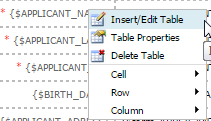
- Insert/Edit Table: Insert a specific number of rows or columns. Also, if a specific row or column is select, its style can be modified.
- Table Properties: Change table properties.
- Delete Table: it delete a specific cell or the whole table.
- Cell: Modify the properties of the cell.
-
- Table Cell Properties: Click on this icon to set properties for a specif cell of an inserted table. to enable it select a table which will be modified and the icon will be enabled.
-
- Split Merged Table Cell: Click on this icon to split merged cells from a table. Select the row which was merged.
-
- Merge Table Cells: Click on this icon to merge cells from a table. Select two cells on a table and click on this icon to merge them.
- Row: Modify properties of a specific row:
-
- Table Row Properties: Click on this icon to set properties on an inserted table.
-
- Insert Row Before: Click on this icon to insert a row before the select one. To enable it select a the row of the table on which this new row will be inserted.
-
- Insert Column After: Click on this icon to insert a row after the select one. To enable it select a the row of the table on which this new row will be inserted.
-
- Delete Row: Click on this icon to delete a selected row from a table.
-
- Column: Modify properties of a specific column.
Editing the HTML Code
The HTML View area is easy enough to use, that most people can avoid having to edit the HTML code in their DynaForms. Nonetheless, the WYSIWYG HTML editor has a number of limitations. The DynaForm Editor is designed to insert fields vertically in the DynaForm and the WYSIWYG HTML editor can only make basic alterations to the form structure. For example, the HTML code must be directly edited in order to position fields in horizontal rows.
To begin editing the HTML code, click on the Enable HTML Editing checkbox to activate it. Then edit the HTML code. To check how the changes to the HTML will effect the DynaForm, click the Refresh View button, which will update the HTML View area and the Preview mode for the DynaForm. Note that these changes will not be permanently saved until the Save icon in clicked in the main DynaForm Editor toolbar.
Unlike when editing XML, ProcessMaker provides the option to undo the changes to the HTML. To revert the HTML to its original state, click on the Restore Original HTML button. Note that this button will NOT revert the HTML back to the last time it was saved. Instead, the HTML will be reverted back to the state defined by the field list and the default ProcessMaker layout for DynaForms. So all your customization to the code will be lost. If you might want to revert the code back to a previous version which includes your modifications, it is recommended to make copies of the code and save them in an external plain text editor.
HTML form storage
If HTML editing is enabled for a DynaForm, its HTML code is stored in the file location:
<INSTALL-DIRECTORY>/shared/sites/<WORKSPACE>/xmlForms/<PROCESS-UID>/<DYNAFORM-UID>.html
For example:
Linux/UNIX:
/opt/processmaker/shared/sites/workflow/xmlForms/728cae447fbdF7be6aeb1276dce1f/41162480747fa4824e244a076980812.html
Windows after version 1.6-4260 or manual install:
C:\Program Files\ProcessMaker\processmaker\shared\sites\workflow\xmlForms\728cae447fbdF7be6aeb1276dce1f\41162480747fa4824e244a076980812.html
Windows before version 1.6-4260:
C:\Program Files\ProcessMaker\apps\processmaker\shared\workflow_data\sites\workflow\xmlForms\728cae447fbdF7be6aeb1276dce1f\41162480747fa4824e244a076980812.html
If the HTML code gets corrupted and can not be edited inside ProcessMaker, it is possible to directly edit the code with a plain text editor. While a DynaForm is being edited, it is saved as a temporary file named:
<INSTALL-DIRECTORY>/shared/sites/<WORKSPACE>/xmlForms/<PROCESS-UID>/<DYNAFORM-UID>_tmp#.html
For example:
/opt/processmaker/shared/sites/workflow/xmlForms/728cae447fbdF7be6aeb1276dce1f/41162480747fa4824e244a076980812_tmp0.html
If the system crashes while editing a DynaForm, it is possible to recover it by copying the HTML code out of the temporary file.
Fields Handler tab
The Fields Handler tab allows all the fields in a DynaForm to be easily viewed at a glance and their definitions to be edited or deleted. Moreover, the Fields Handler provides the ability to easily reorder fields in DynaForms by dragging and dropping the fields in new locations with the mouse. After changes are made to the definition of fields in the Fields Handler, the DynaForm will automatically be updated in the XML and Preview tabs.
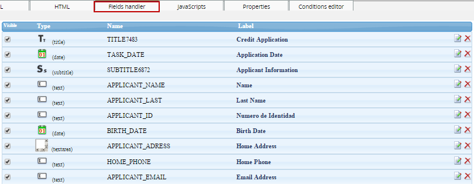
- Visible: check this field to make a field visible or non visible.
- Type: This column displays the type of field, such as "Title", "Text", "Dropdown" or "Grid".
- Name: Displays the field names, which is how fields are identified in their XML definition and how they are saved as case variables.
- Label: Displays the name of the field
- Edit: Click this link to open a dialog box to edit the definition of the field.
- Delete: Click this link to delete the field from the DynaForm.
JavaScripts tab
ProcessMaker allows process designers to insert JavaScript into their DynaForms. As a browser-side scripting language, JavaScript is limited to accessing only the objects within the DynaForm, so it can not access case and system variables, use ProcessMaker web services or consult databases like ProcessMaker triggers. Nonetheless, within the sandboxed environment of a web browser, JavaScript can add error checking, dynamic controls and dialogs to forms which will greatly enhance the flexibility and functionality of a process.
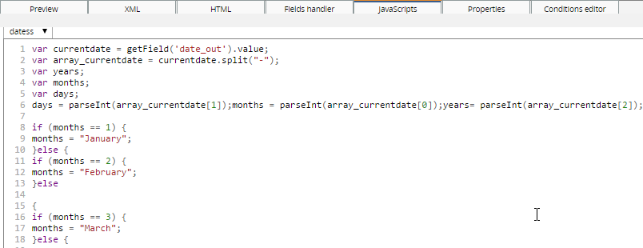
JavaScript can not be added to a DynaForm unless it is part of a JavaScript object in the DynaForm. All code entered into the JavaScript editor will be lost unless it is first associated with a JavaScript object. Click on the JS icon in the toolbar to add a JavaScript object and then define its name and add code.
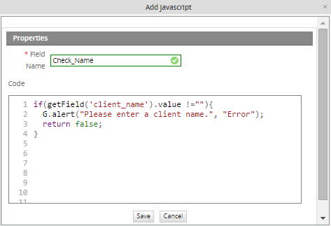
A DynaForm can have multiple JavaScript objects. To edit the code in one of the JavaScript objects, go to the JavaScript tab and select it from the dropdown box in the uppper left-hand corner. After editing the code, it can be checked by simply switching to the Preview tab. The new JavaScript code will immediately execute upon displaying the form in Preview mode (even if the DynaForm has not yet been saved).
To make a button execute JavaScript code, enter the name of the JavaScript object which contains the code for the button.
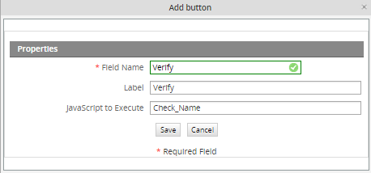
The code will not execute unless it is associated with one of the button's events such as onclick, ondblclick, onfocus, or onkeypress. The way to do this is create a function with the code to execute and then assign that function to the button's event. For instance, in this example the function checkInput() will execute when the verify button is clicked:
var maxVal = 100;
if (getField("price").value > maxVal) {
G.alert("Reducing price to $100", "Value out of bounds");
getField("price").value = 100;
}
}
getField("verify").onclick = checkInput;
To get started programming in JavaScript, see JavaScript in DynaForms and JavaScript Functions.
Properties tab
The Properties tab is where the general characteristics of the DynaForm are set.
- DynaForm: The title of the DynaForm.
- Type: The type of DynaForm, which can be "Master" (normal) or "Grid" forms.
- Be careful when switching the type of form from a master form to a grid. Grids can can only contain fields which are links, textboxes (including currency, percentage and date boxes) and dropdown boxes (including yes/no boxes). If any other type of field is included such as a title field or checkbox, errors will be generated by switching the form type. Delete all the fields which aren't allowed in grids, before converting from a master form to a grid form.
See properties of Dynaform types on the following images:
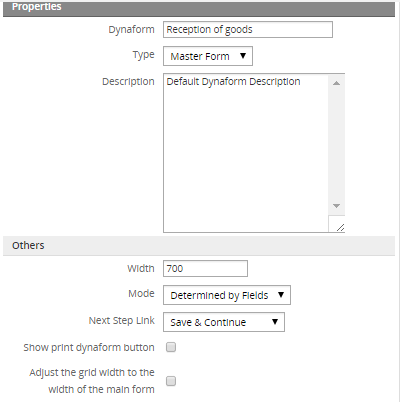
MASTER FORM PROPERTIES
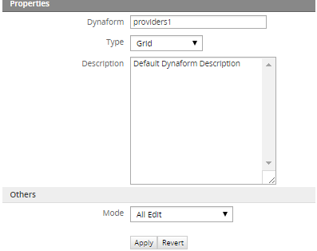
GRID FORM PROPERTIES
It is possible to have only the specific fields depending on the Dynaform type selection. For instance, if a Grid is selected, only Mode will be enabled to choose the type of the Dynaform, removing all unnecessary fields which Grids do not support.
- Description: A description of the DynaForm, which is mainly used by the process designer, since the normal production user will not see the description.
- Width: The width of the DynaForm in pixels.
- It is generally recommended that DynaForms not be wider than 700 pixels, so that they can be displayed on older monitors with 800x600 resolution with room for a sidebar and scrollbars. Narrower DynaForms also allow for easier cutting and pasting of information between windows, which is important for processes which involve a great deal of data entry.
- Mode: Sets the mode of the fields in the form. In "view" mode, a field is grayed out and the user can not alter the data in the field. In "edit" mode a field has a normal appearance and the user can change its data. There are 3 options:
- Determined by Fields: The mode of each field is determined by its individual properties. Select this option if planning to set certain fields to "view" mode.
- All Edit: The default option. All the fields in the DynaForm are automatically set to "edit" mode.
- All View: All the fields in the DynaForm are automatically set to "view" mode.
Note: The Read Only property is independent from the mode property. Both properties can be used to prevent the user from changing the data in fields, but Read Only does not affect the appearance of the field, while Mode changes its appearance.
- Next Step Link: This option specifies how the data entered into a DynaForm will be handled when moving to the next step in the task.
- No Save and Continue: any data entered into the DynaForm will be discarded.
- Next Step: link without clicking a Submit button on the form to save the data.
- Prompt: the user will be asked whether the data should be saved or not after clicking the "Next Step" link in the form. The "Save and Continue" option will automatically save any data entered into the form when the "Next Step" link is clicked.
If using the No Save and Continue or Prompt options for a DynaForm, it is possible that the user will choose to not save the data. If the data isn't saved, no case variables will be created for the fields in the DynaForm. An error can be caused in the process if a subsequent condition or trigger tries to reference a case variable which should have been created when a DynaForm's field was saved.
If users are given the option to not save their data in a DynaForm, but case variables are needed from the DynaForm fields in subsequent steps, it is a good idea to create a trigger which fires after the DynaForm to create those case variables. For instance, if your case has a checkbox named "Finished_Assignment" and a subsequent evaluation routing rule has the condition @@Finished_Assignment=="On", then you will need to manually create the @@Finished_Assignment case variable if the DynaForm wasn't saved. Add the following code to a trigger which fires after the DynaForm:
The variable @@Finished_Assignment will be created with an empty string to avoid errors, but it won't equal either "On" or "Off" in case one of the subsequent conditions tests for one of those values.
- Show print Dynaform button: Enabling this options shows a print button in the DynaForm, allowing users to print the Dynaform.
- Adjust the grid width to the width of the main form:
This option allows grid width to be adjusted to the width of the Dynaform master, it means if the Grid is wider than the Dyanform master by selecting this option automatically the width will be adjusted. Click on the "Adjust the grid width of the main form" option displayed on the master form. This option is available from version 2.5.
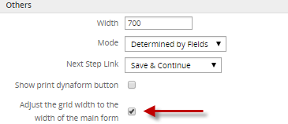
Click on the Apply button to immediately apply the changes entered into the Properties tab and update the definition of the DynaForm, so the changes can be seen in the other DynaForm Editor tabs.
To undo the changes entered into the Properties tab to the DynaForm definition, click the Revert button.
Conditions Editor tab
The Conditions Editor is a user-friendly way to show or hide different elements of the DynaForm as the user interacts with the form and changes values in the fields. The Condition Editor allows for forms to be created with dynamic content without having to resort to JavaScript code. Conditions are evaluated whenever specified field(s) are either loaded and/or changed. If the condition evaluates to true, then fields will be shown or hidden depending on which function is selected.
Defining a Condition
In the DynaForm Editor, go to the Condition Editor tab, to see the list of conditions. To create a new condition, click on the "New" link at the top. The Conditional Show/Hide Editor dialog box will appear where the condition can be defined:
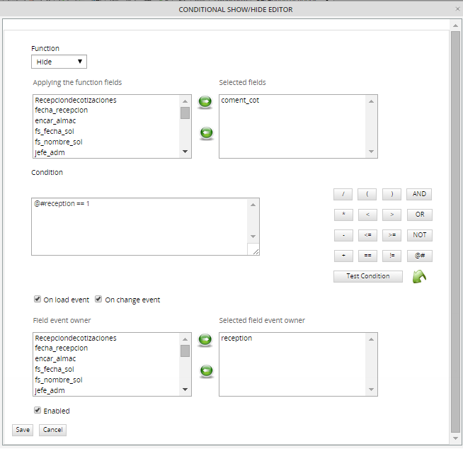
First select one of the functions to either show or hide fields.
| Function | Description |
|---|---|
| Show | Shows the selected fields, but does not affect any other fields. |
| Show Only | Shows only the selected fields, and hides all other fields in form. |
| Show All | Shows all fields in the DynaForm. (It is not necessary to select any fields.) |
| Hide | Hides the selected fields, but does not affect any other fields. |
| Hide Only | Hides only the selected fields, and shows all other fields in the form. |
| Hide All | Hides all the fields in the DynaForm. (It is not necessary to select any fields.) |
The Show and Hide functions will operate on only the selected fields, but will not affect the visibility of any other fields.
Next, select which field(s) the function will be applied to. In other words, which fields will be shown or hidden. Highlight one or more fields in the Applying the function fields listbox, then click on the button to add those fields to the Selected Fields listbox. To remove a field from the list of Selected Fields, highlight the field and then click on the button.
Note: It is not possible to select fields inside a grid. Use JavaScript to hide these fields. A bug currently prevents radiogroups and checkgroups from being hidden.
Next define the condition, which is a Boolean expression which can evaluate to true or false in JavaScript. If the condition is true, then the function will be executed and show or hide the selected fields. If false, then the function will not be executed, and the appearance of the DynaForm will not change.
In JavaScript, any string which isn't empty or any non-zero number is considered true.
Therefore, the following values evaluate to true: 24, 3.14, -42, "HeLlO", "@#$%$%", true
In contrast, the following values all evaluate to false: 0, null, "" (an empty string), false, NaN (Not a Number)
Conditions can either be directly entered into the Condition editing box or the condition can be constructed using the button pad on the right hand side.
Fields from the DynaForm can be referenced by prepending '@#' to the field name. For example, a field named 'ClientAddress', could be referenced as '@#ClientAddress'. Remember that field names are case sensitive. Rather than writing out the field names, it is easier to use the [@#] button to insert the variable names.
Buttons to construct conditions
| Button | Description | Example conditions |
|---|---|---|
| Equals | @#CurrencyType == "dollars" @#Total == 100 @#MyCheckbox == false | |
| Not equals | @#CurrencyType != "euros" @#Total != 0 | |
| Less than | @#Total < 1000 @#LastName < "M" | |
| Less than or equal to | @#SubTotal <= @#Total | |
| Greater than | @#Balance > 0 | |
| Greater than or equal to | Math.sqrt(@#Total) >= 5 | |
| Addition | @#Subtotal + @#Taxes > @#AccountLimit @#FirstName + @#LastName != "" | |
| Subtraction | @#Price - @#Discount > 300 | |
| Multiplication | @#BasePrice + @#BasePrice * @#TaxRate != @#FinalPrice @#Diameter * Math.PI < 25 | |
| Division | @#Total / @#Quantity < 10 | |
| Begin grouping | (@#Price - @#Discount) * @#Quantity < @#MinimimOrder | |
| End grouping | (100 + @#Percent) / 100 * @#Price < 900 | |
| Both expressions must be true to evaluate to true | @#Total > 40 && @#Total < 400 @#Total > 0 && @#PaymentMethod != "credit card" | |
| Only one of the expressions need to be true to evaluate to true | @#Total < 200 || @#PaymentMethod == "cash" | |
| Reverse the valence, so true becomes false and false becomes true | !(@#Address == "") | |
| Insert field | ||
| Enter test values in field(s) |
String values should be enclosed inside double or single quotation marks. Dropdown boxes and listboxes, store the value of the selected option, not the label of the selected option. Checkboxes can either have a value of true or false. If advanced mathematical operations are needed, use the constants and methods of JavaScript's Math object, such as Math.E, Math.PI, Math.sqrt(), Math.round(), and Math.max().
Note that field references will always return the value property of the field, except for checkboxes, which return the checked property. It is not possible to access any other property of the fields, such as @#MyField.disabled; nor is it possible to call any string methods on the fields, such as @#MyField.toUpperCase() or @#MyField.search(). Since checkgroups and radiogroups, do not have a value property, it is not possible to use them inside a condition. It is also not recommended creating a condition which looks for a particular selected value in a listbox, since multiple options can be selected. If using checkgroups, radiogroups or listboxes, it is recommended to use JavaScript to hide and show fields.
After creating a condition, click on Test Condition to check whether it is a valid condition. If there is an error in the condition, a message will be displayed in red at the bottom of the condition editing box, indicating what is the problem:
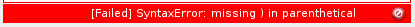
If the condition is valid, a message in green will be indicating whether the condition evaluates to true:

or evaluates to false:
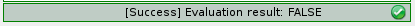
Testing the condition at this point will be of little help, since the user hasn't entered any data yet. To test the condition with some data, click on the  button and enter some values into the fields used in the condition. Click on Save Data to close the dialog box, then click on Test Condition again to reevaluate the condition with the saved data.
button and enter some values into the fields used in the condition. Click on Save Data to close the dialog box, then click on Test Condition again to reevaluate the condition with the saved data.
After creating a condition, specify when the condition will be evaluated. If the condition should be evaluated when the selected field(s) are first loaded, i.e., when DynaForm is first displayed, then check the option On load event. If the condition should be evaluated when the user changes the value of the selected field(s), then check the option On change event.
Then select which fields whose onload and/or onchange events will cause the condition to be evaluated. One or more fields need to be selected.
To enable the condition, so it will be evaluated, check the option Enabled.
Managing Conditions
After a condition is created, it is added to the list of available conditions.
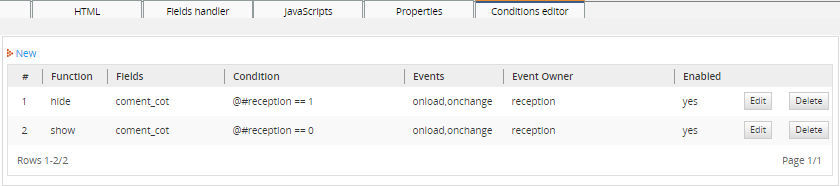
To alter a function, click on its Edit link. To remove it, click on its Delete link.
The conditions will be evaluated according to their number in the list, with the #1 condition executing first. This makes it possible to use multiple combinations of conditions. For example, one condition could use the Show All function to show all the fields, then a condition lower in the list could use the Hide function to hide a particular field out of all those which were shown.
Example
A dynaform is used to get information about users' educational history.
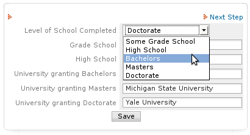
If users select "Some grade school", it doesn't make sense to ask for the names of the high school or the universities they attended. Conditions can be used to only show the fields for the level of university attained. See the conditions which were defined in the list above.
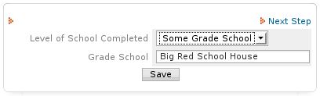
When the users select "Bachelors", they are only asked to enter the name of their grade school, high school and the university which granted the bachelors degree.

Preventing Session Timeout
It's common to have ProcessMaker session expired, specially when users spend plenty of time editing Dynaforms, and when they are trying to save it, all changes made are lost without any previous warning and usually the following message appears:
When this message appears, users are not able to save the Dynaform, forcing them to lost their session and login again into ProcessMaker
From version 2.5 when the session expired, users gets a warning, which allows them to save the Dynaform, dispalying the following message:
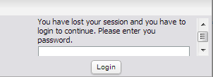
Basically, users need to introduce his password to have the Dynaform saved correctly.
Note: The session timeout works ONLY with DynaForms, if working with Triggers, Input and Output Documents and the session expires before saving the information, all data will lose.
Printing Dynaforms
From version 1.2-3862Beta and later, an option is available to print Dynaforms. To enable printing, open the form in the DynaForm Editor and to go the Properties tab. Check the option Show print dynaform button. Then, a icon to print the DynaForm will appear in the upper left corner of the Dynaform.

Clicking on the icon will open the DynaForm in a separate window to be printed. If running a case, information will be listed at the top of the DynaForm about the case number, case title, the process name, the current username, and workspace name. If in preview mode inside the DynaForm Editor, only the process name will be listed. In order to print the DynaForm, the machine running the web browser has to be configured to print.
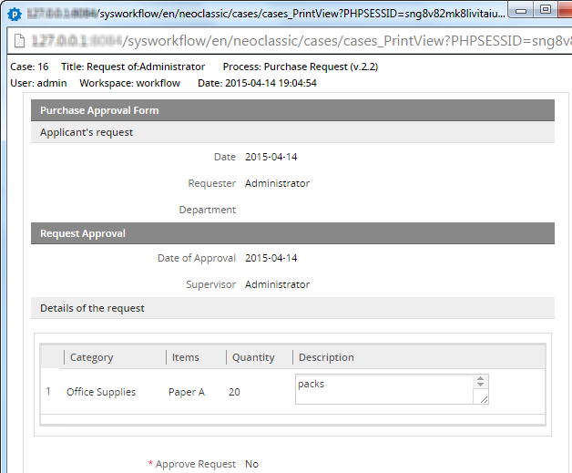
Note: Only data which is currently saved to the database will be printed. To print the form with its current data, add a custom button to the DynaForm and use JavaScript to print the form as it currently appears:
To print the DynaForm with the data which will be saved to the database, use this JavaScript code:
getField("myPrintButton").onclick = function() { printForm = true; }
getField("myPrintButton").form.onsubmit = function() {
if (printForm)
window.print();
return true;
}
From version 2.5.2 a message will display when users click over print icon; this message asks users if they want to save current data before printing:

- If clicking in Accept button, current Dynaform information will be saved and then the print popup will open.
- If clicking in Cancel button, Dynaform information will be saved with the last changes, if the data were added on the Dynaform you want to print without submitting it, information won't be saved and the Dynaform will be printed without those changes.
Dyanforms accessibility
Available Version: 2.5
Improving Dynaforms accessibility, a label control was included from this version providing users an easier access when fields are being filled out. Now users will be able to click over the label of a field and automatically the cursor will be focused on the corresponding field for that label marked it with an orange line, so it won't be necessary to click inside a text field. This is a great improvement to be used also on mobile phones.

To accomplish this a new tag was added while HTML is generated, this tag allows fields the accessibility mentioned before, this new tag is defined as follows:
To check this label, right click on the dynaform an choose View Page Source a new window will be open with the HTML generated for that dynaform, look for the field to be checked:
<td class='FormLabel' width="40%"><label for="form[APPLICANT_ID]">Social Security</label></td>
<td class='FormFieldContent' width='300' ><input class="module_app_input___gray" id="form[APPLICANT_ID]" name="form[APPLICANT_ID]" type="text" size="35"
maxlength="64" value="" style="" onkeypress="" pm:fieldtype="text" pm:decimal_separator="." /></td>
</tr>
Note: Compatibility with all browsers.